Hasta ahora todos los programas han tenido una sola ventana (Activity)
Es muy común que una aplicación tenga más de una ventana. Para implementar esto en Android debemos plantear una segunda clase que también herede de la clase Activity (tengamos en cuenta que cuando utilizamos ADT automáticamente cuando creamos un proyecto nos crea el archivo XML y java de la primer Activity)
Vamos a ver en este concepto los pasos que debemos dar para crear otro Activity y como activarlo desde el Activity principal.
Problema:
Confeccionar un programa que muestre en la ventana principal un botón que al ser presionado muestre otra ventana (Activity) mostrando un TextView con el nombre del programador de la aplicación y un botón para cerrar la ventana o actividad.
1 - Primero creamos un nuevo proyecto que lo llamaremos proyecto008 y en la ventana principal creamos la siguiente interfaz:
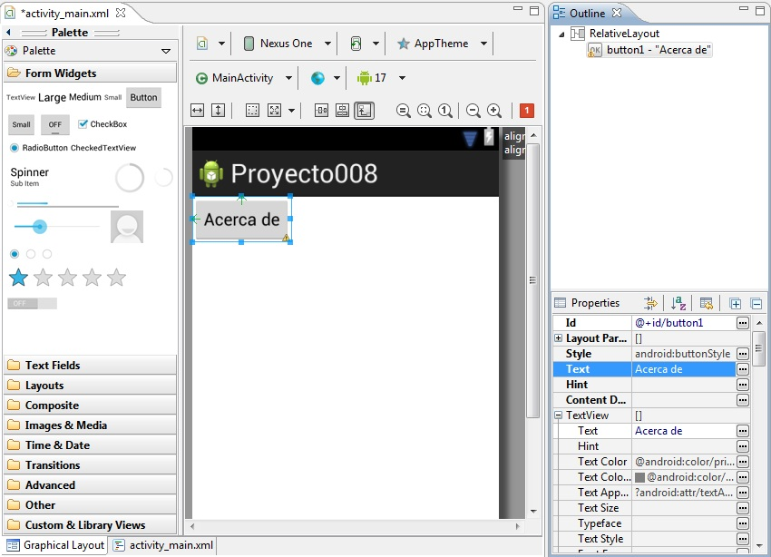Es decir que nosotros queremos que cuando se presione el botón "Acerca De" nos abra otra ventana (Activity) y nos muestre el nombre del programador.
2 - Ahora tenemos que crear el segundo Activity. Crearemos primero el archivo XML. Presionamos el botón derecho sobre la carpeta layout y seleccionaremos la opción New -> Android XML File
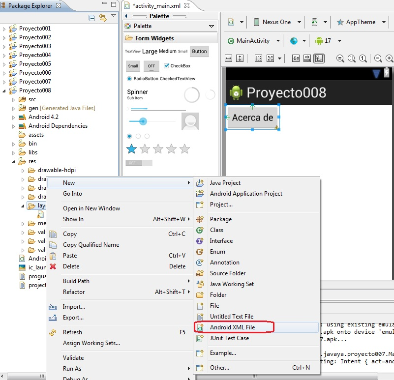
Aquí tenemos que definir el nombre del archivo XML (debe estar en minúsculas), lo llamaremos acercade:
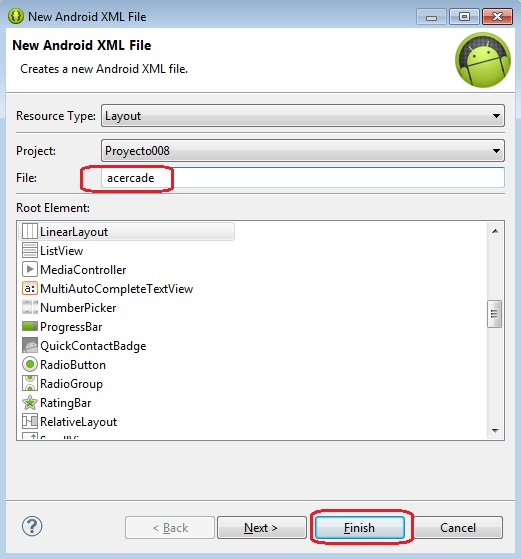Implementamos ahora la interfaz visual de esta segunda ventana (Activity) disponiendo un objeto de la clase TextView donde mostramos el nombre del autor de este programa y un Button para cerrar la ventana.
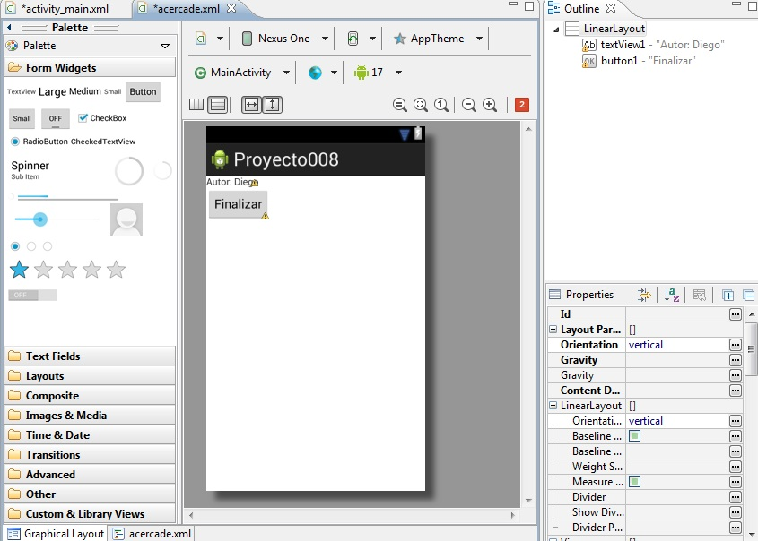3 - Tenemos ahora que crear el archivo Java donde dispondremos la funcionalidad de la segunda ventana (Activity)
Creamos una nueva clase al proyecto desde el menú contextual(presionamos el botón derecho del mouse sobre el paquete com.androidya.proyecto008):
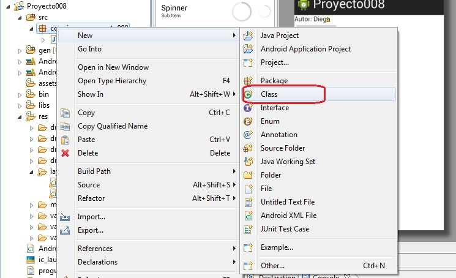Al nombre de la clase la llamamos AcercaDe y debemos especificar que hereda de la clase Activity (podemos presionar el botón Browse que está en la misma fila de SuperClass y buscamos la clase Activity para que disponga el nombre del paquete donde se encuentra):
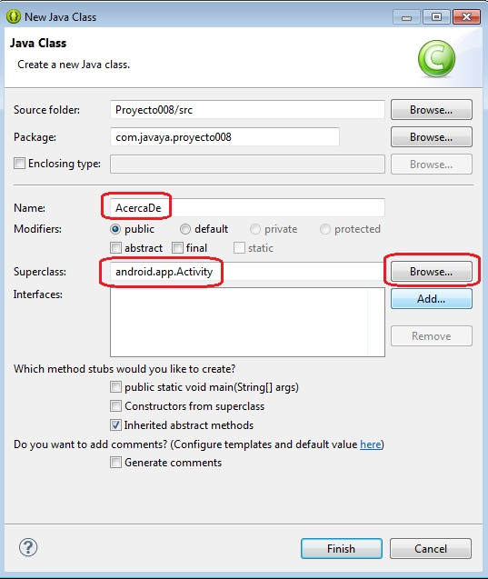El código que nos genera es:
package com.javaya.proyecto008;
import android.app.Activity;
public class AcercaDe extends Activity {
}
Debemos sobreescribir el método onCreate donde enlazamos esta clase con el archivo XML que diseñamos.
Si no recordamos cual es la sintaxis exacta de este método podemos también generarlo automáticamente con la ayuda de nuestro editor, elegimos Source -> Override/Implement methods:
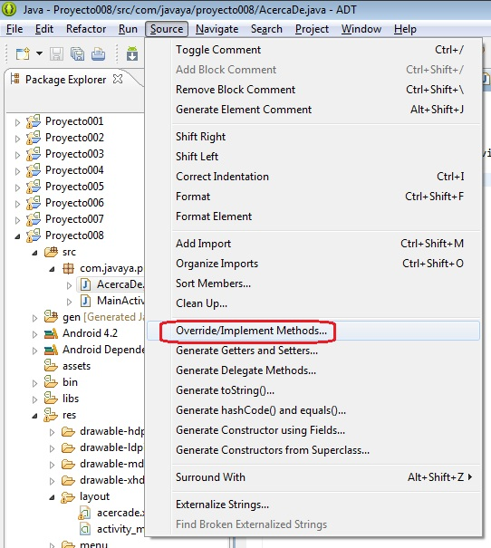Buscamos el método onCreate y presionamos el botón Ok, ahora ya tenemos la clase con el método onCreate:
package com.javaya.proyecto008;
import android.app.Activity;
import android.os.Bundle;
public class AcercaDe extends Activity {
@Override
protected void onCreate(Bundle savedInstanceState) {
// TODO Auto-generated method stub
super.onCreate(savedInstanceState);
}
}
Ahora solo falta llamar al método setContentView para enlazar el archivo XML:
package com.javaya.proyecto008;
import android.app.Activity;
import android.os.Bundle;
public class AcercaDe extends Activity {
@Override
protected void onCreate(Bundle savedInstanceState) {
// TODO Auto-generated method stub
super.onCreate(savedInstanceState);
setContentView(R.layout.acercade);
}
}
Como podemos ver la clase AcercaDe hereda de la clase Activity e implementa el método onCreate para enlazar el archivo XML que creamos anteriormente.
4 - Otro paso fundamental es registrar el Activity en el archivo "AndroidManifest.xml" que se encuentra en la raiz principal del proyecto.
Seleccionamos el archivo y activamos la pestaña : "Application", presionamos el botón "add" y seleccionamos "Activity":
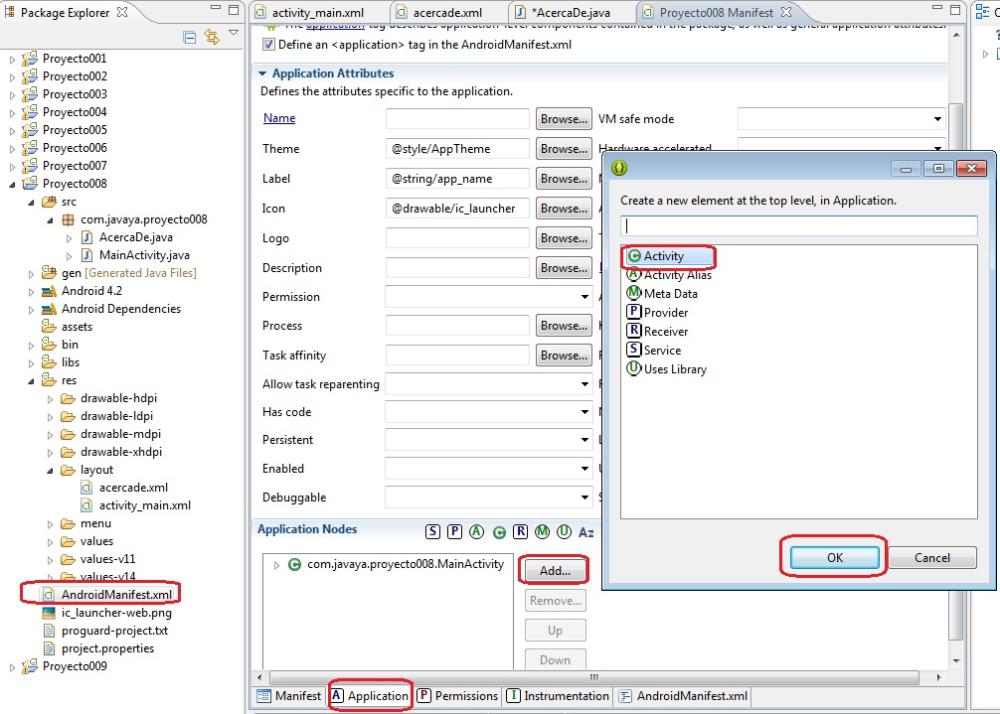Por último seleccionamos en "Application Nodes" la actividad creada y definimos la propiedad Name con el nombre de la clase que la implementa (en nuestro caso se llama AcercaDe):
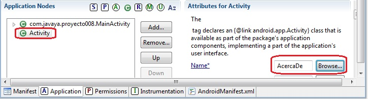
5 - Ahora implementaremos la funcionalidad en la actividad (Activity) principal para que se active la segunda ventana.
Inicializamos la propiedad OnClick del objeto de la clase Button con el valor "lanzar", este es el método que se ejecutará cuando se presione.
El código fuente de la actividad principal queda:
package com.javaya.proyecto008;
import android.app.Activity;
import android.content.Intent;
import android.os.Bundle;
import android.view.Menu;
import android.view.View;
public class MainActivity extends Activity {
@Override
protected void onCreate(Bundle savedInstanceState) {
super.onCreate(savedInstanceState);
setContentView(R.layout.activity_main);
}
@Override
public boolean onCreateOptionsMenu(Menu menu) {
// Inflate the menu; this adds items to the action bar if it is present.
getMenuInflater().inflate(R.menu.activity_main, menu);
return true;
}
public void lanzar(View view) {
Intent i = new Intent(this, AcercaDe.class );
startActivity(i);
}
}
En el método lanzar creamos un objeto de la clase Intent y le pasamos como parámetros la referencia del objeto de esta clase (this) y la referencia del otro Activity (AcercaDe.class)
Llamamos posteriormente al método startActivity pasando el objeto de la clase Intent (con esto ya tenemos en pantalla la ventana del segundo Activity:
public void lanzar(View view) {
Intent i = new Intent(this, AcercaDe.class );
startActivity(i);
}
Si ejecutamos el programa podemos ver que cuando presionamos el botón "Acerca De" aparece la segunda ventana donde se muestra el TextView con el valor "Autor de este programa: Diego" y un botón con el texto "Finalizar" (si presionamos este botón no sucede nada, esto debido a que no hemos asociado ningún evento a dicho botón)
6 - Debemos codificar el evento OnClick de la segunda actividad. Seleccionemos el botón "Finalizar" y definamos en la propiedad OnClick el nombre de método que se ejecutará al presionarse el botón (en nuestro caso lo llamaremos cerrar") :
El código fuente de la actividad AcercaDe queda:
package com.javaya.proyecto008;
import android.app.Activity;
import android.os.Bundle;
import android.view.View;
public class AcercaDe extends Activity {
/** Called when the activity is first created. */
@Override
public void onCreate(Bundle savedInstanceState) {
super.onCreate(savedInstanceState);
setContentView(R.layout.acercade);
}
public void cerrar(View view) {
finish();
}
}
Cuando se presiona el botón finalizar llamando al método finish() que tiene por objetivo liberar el espacio de memoria de esta actividad y pedir que se active la actividad anterior.
Ahora nuestro programa está funcionando completamente:
Primer Activity:
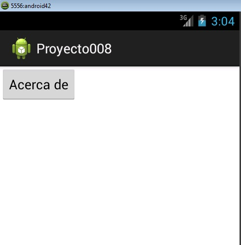Segundo Activity:
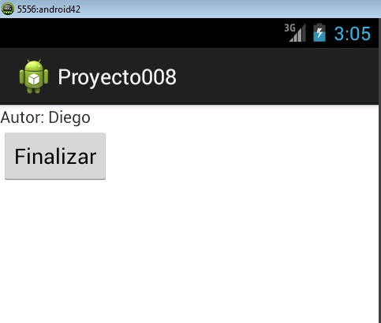Ahora ya tenemos el programa funcionando en forma completa.
Este proyecto lo puede descargar en un zip desde este enlace: proyecto008.zip
Problema propuesto
-
Realizar un programa que contenga dos Activity. En el primero que solicite el ingreso de una clave (control Password) Si ingresa la clave "abc123" activar el segundo Activity mostrando en un TextView un mensaje de bienvenida (mostrar en un TextView si se ingrese la clave incorrecta).
Llamar al proyecto: proyecto009.
En tiempo de ejecución los dos Activity deben mostrarse algo similar a esto:
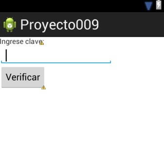

Este proyecto lo puede descargar en un zip desde este enlace: proyecto009.zip